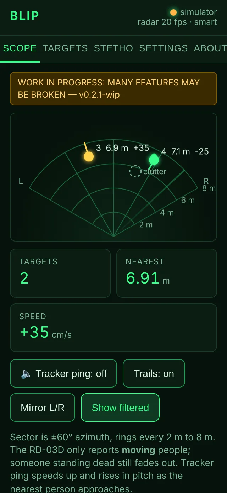
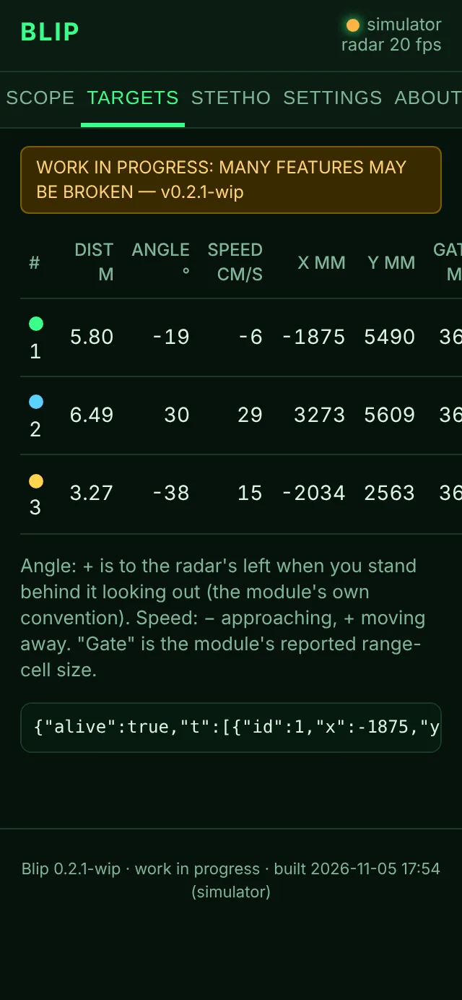
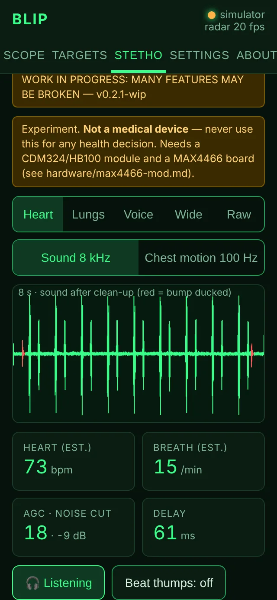
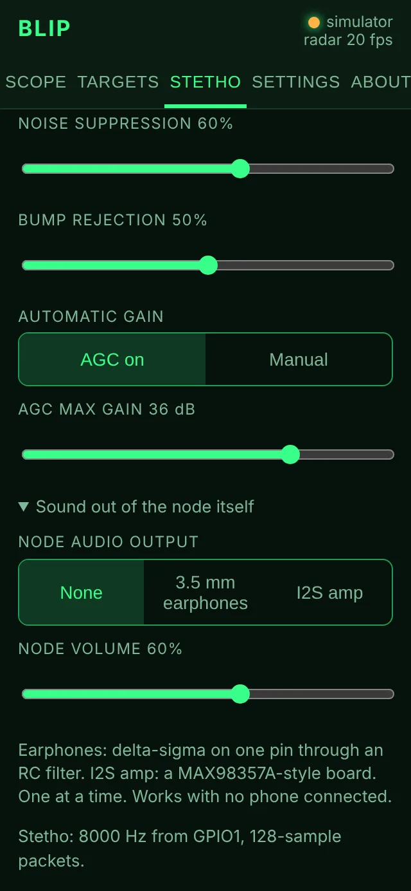
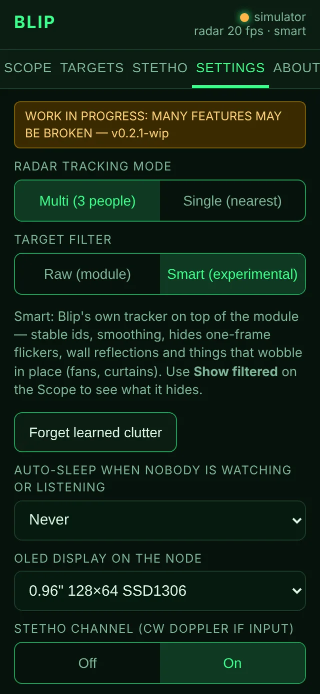
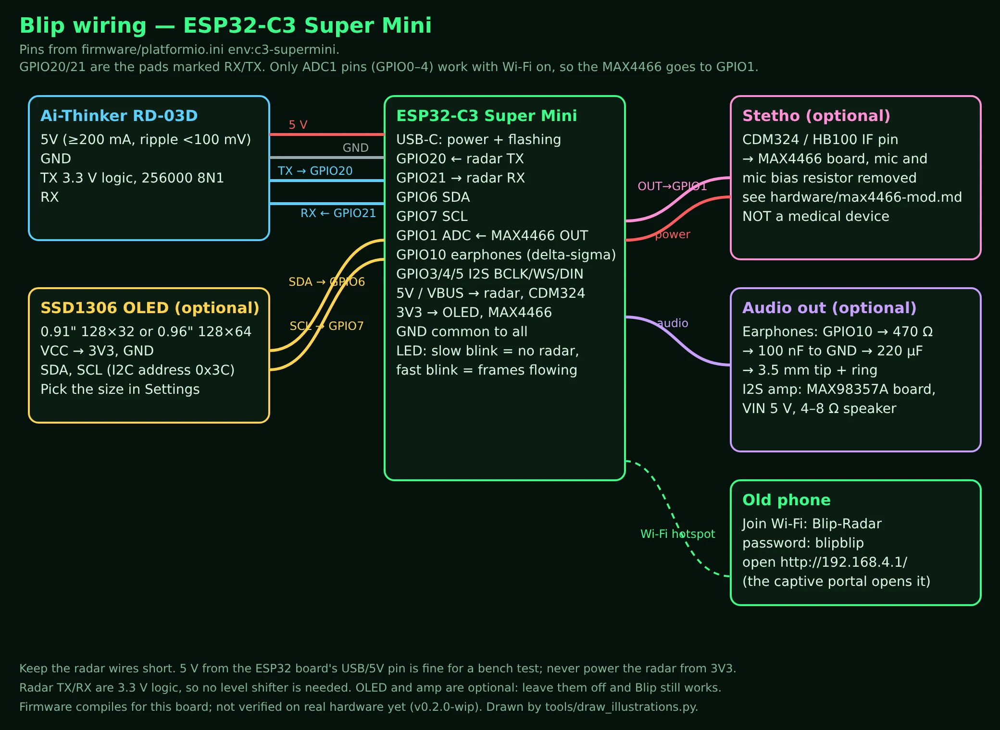
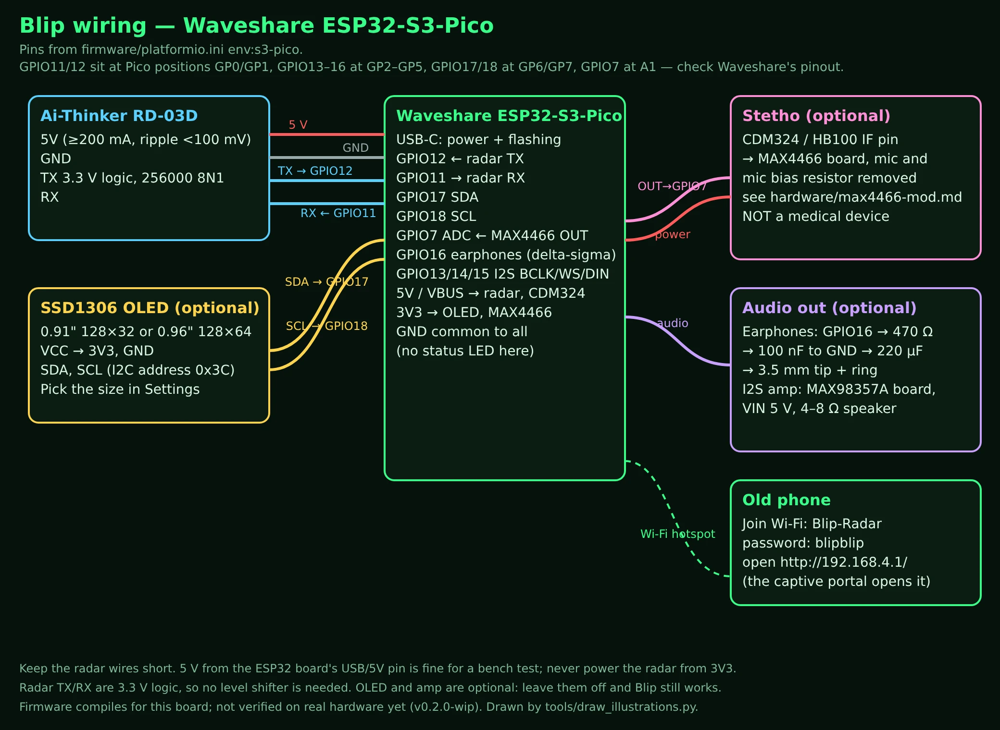
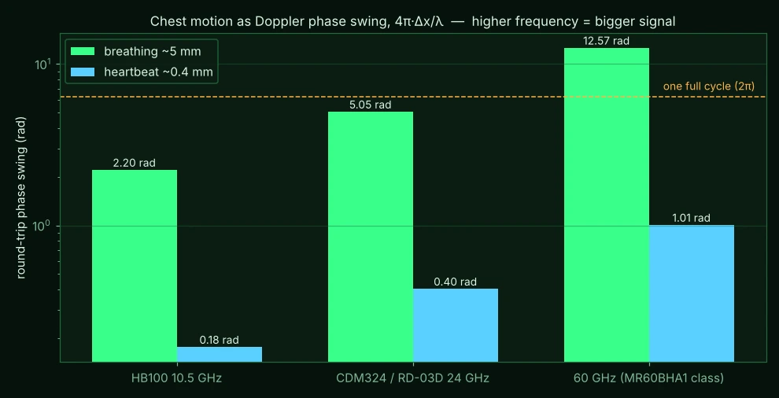
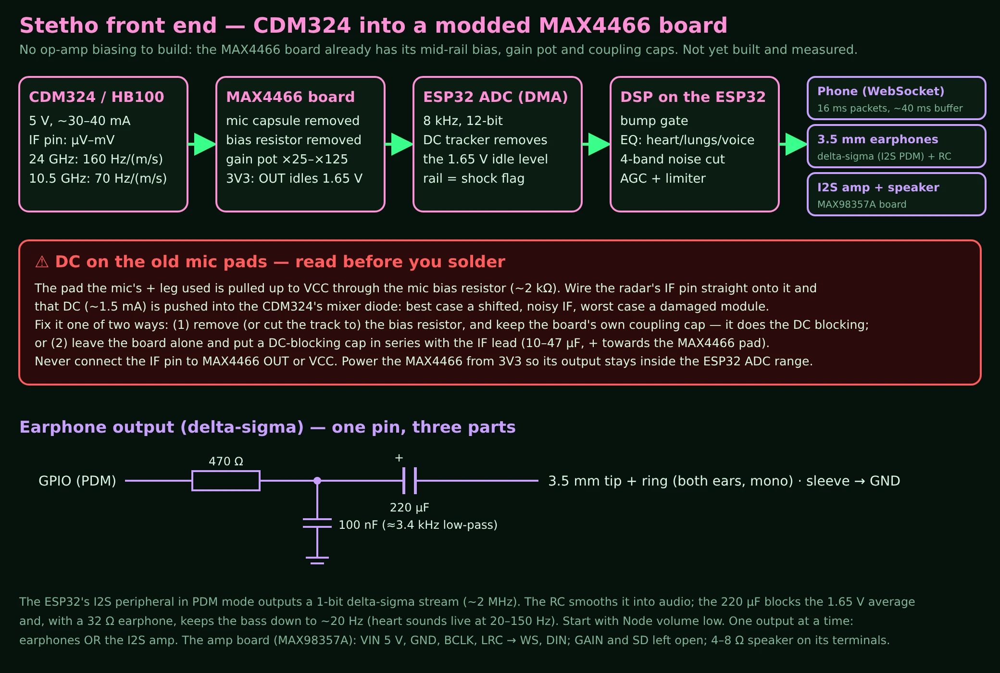
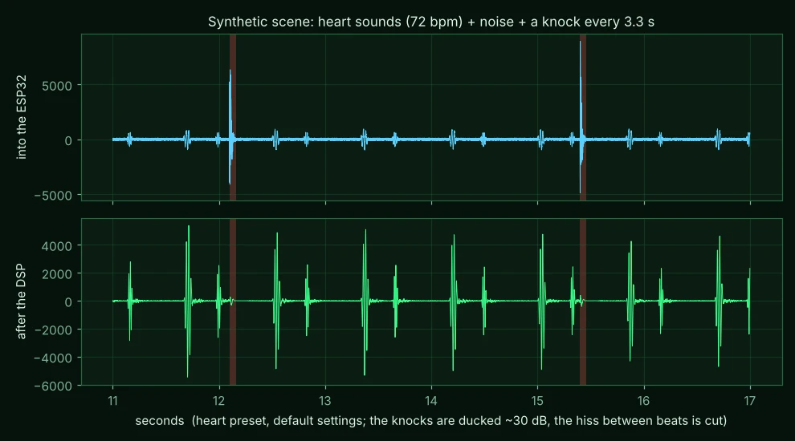

BLIP one ESP32 · one 24 GHz radar · an old phone as the screen
An Ai-Thinker RD-03D tracks up to three moving people. An ESP32-C3 Super Mini (or Waveshare ESP32-S3-Pico) reads it, runs a Wi-Fi hotspot and serves a radar scope to whatever phone joins. Optional 0.9x" OLED mirror. Optional "Stetho" channel: a CW Doppler module through a modded MAX4466 mic board, cleaned up on the ESP32 and played live to the phone, earphones or a speaker.

No second MCU
The original design used a XIAO plus an Arduino GIGA with a display shield. Here the phone draws.
Works anywhere
The node is its own hotspot with a captive portal. No router, no internet, no app.
Two boards, one firmware
ESP32-C3 Super Mini or ESP32-S3-Pico; pick them in the Blip Flasher and press one button.
Honest about the stethoscope
The RD-03D can't be one (its DSP is sealed in the chip). A £3 CDM324/HB100 can. Both documented.
What does not exist yet
| Thing | State |
|---|---|
| Firmware on real hardware | Compiles for both boards, not yet flashed |
| CDM324 + MAX4466 front end | Documented, not built; the DSP is tested on a synthetic scene |
| Earphone / I2S amp outputs | Compile, not heard yet |
| Smart target filter | Experimental, opt-in; tested on synthetic scenes only |
| Enclosure, battery | None |
| Joining home Wi-Fi, mDNS | Not yet (hotspot only) |
Screens (from the simulator)




Wiring


Why 24 GHz, and why a tracker can't hear a heart

A heartbeat moves the chest about 0.4 mm. At 24 GHz that is a 0.4 rad phase wobble in the reflected wave — visible on a raw Doppler mixer output, invisible to a chip that only reports tracked targets in whole centimetres per second. Hence the Stetho channel: a separate CW Doppler module whose IF pin goes through a MAX4466 board into the ESP32's ADC.

Clean-up on the ESP32
A bump gate ducks knocks by 30 dB from their leading edge (4 ms look-ahead), a preset EQ lifts heart, lung or throat sounds, a 4-band noise suppressor cuts the hiss and an AGC keeps the level steady — fixed-point, because the C3 has no FPU. On a synthetic test scene, knocks end up ~38 dB down relative to the heart sounds.

RD-03D + CDM324 together? Both use 24 GHz; the RD-03D's sweep passes the CDM324's frequency and buzzes in its audio. Use an HB100 (10.5 GHz) for the Stetho, or switch the radar off while listening.
📘 Read the manual (PDF) — setup, how it works, design notes and research, wiring, in one illustrated file.
Install
- Download the release zip, unzip it.
- Try it first without hardware: double-click
Blip-Linux.sh/Blip-Windows.bat/Blip-Mac.command. Python 3 is all it needs. - Flash: plug the board in, open the Flash tab on the same page, pick the board, radar and port, press Flash firmware. (The first run installs PlatformIO into a local folder; needs the internet and Git.)
- Wire the radar (5V, GND, TX→GPIO20, RX←GPIO21 on the C3; GPIO12/11 on the S3-Pico).
- On the phone join Wi-Fi
Blip-Radar, passwordblipblip, openhttp://192.168.4.1/.
Real hardware